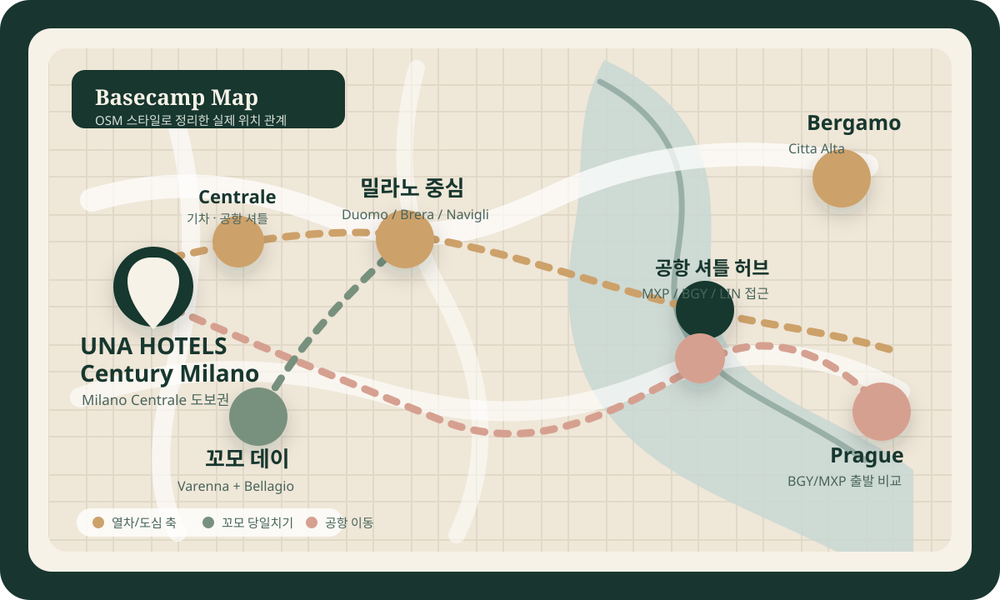
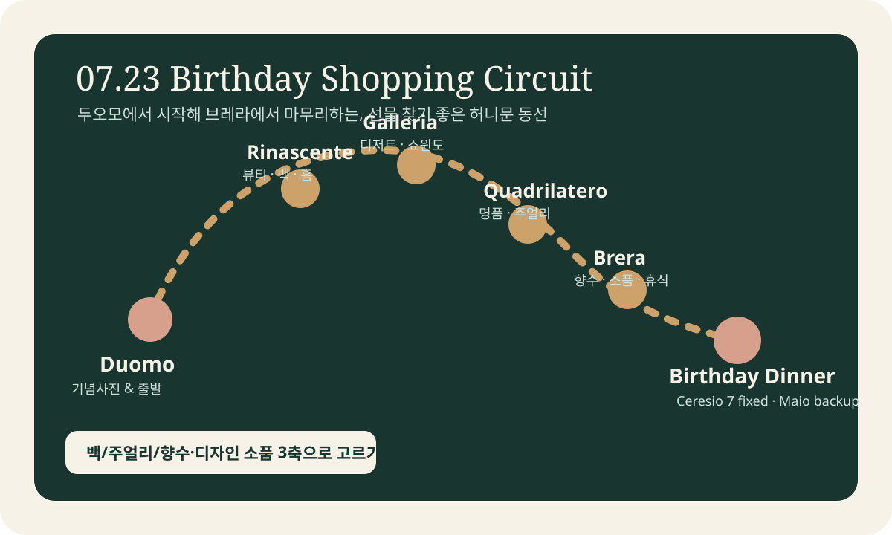

밀라노 도착
오후 체크인 후 무리 없이 Porta Nuova 또는 Brera에서 첫 산책.
UNA HOTELS Century Milano를 베이스로 두고 밀라노 핵심 산책, 생일 쇼핑 데이, 꼬모 호수와 베르가모 당일치기를 분리해 보는 이탈리아 전용 일정입니다. 기존 밀라노 중심의 카드, 지도, 음식 후보, 체크리스트 구조는 그대로 유지했습니다.


오후 체크인 후 무리 없이 Porta Nuova 또는 Brera에서 첫 산책.
Duomo, Galleria, Brera, Navigli를 하루에 연결하되 템포는 느긋하게.
Rinascente, Galleria, Quadrilatero, Brera, 그리고 루프탑 디너.
Milano Centrale에서 Varenna까지 직행, Bellagio까지 짧고 우아하게.
48분 열차 후 Citta Alta와 San Vigilio까지 기분 좋게.
오전 직항 우선이면 BGY, 마지막 아침의 편안함이면 MXP 비교.
기존 이탈리아 일정은 UNA HOTELS Century Milano를 베이스캠프로 둔 구조를 유지합니다. 아래 Overview부터 Day 1-6까지 기존 카드, 지도, 음식 후보, 체크리스트 흐름이 이어집니다.
밀라노 시내는 도보 + ATM 지하철, 꼬모와 베르가모는 Milano Centrale 출발 열차로 해결합니다. 호텔이 역과 셔틀 모두 가까워 짐을 들고 이동하기도 쉽습니다.
밀라노 시내만 진하게 움직이는 날은 ATM 24시간권 7.60€(약 ₩13,300), 더 넓게 쓰면 3일권 15.50€(약 ₩27,000)를 고려할 만합니다. 꼬모·베르가모 열차는 별도 구매가 더 명확합니다.
이 섹션은 기존 일정의 감도는 유지하면서, 현장에서 돈과 시간을 새게 만들 수 있는 세금, 택스프리, 더위, 파업, 공항 이동, 비상연락처만 따로 모은 운영 카드입니다.
UNA HOTELS Century Milano는 밀라노 4성급 호텔 기준으로 숙박세를 별도 예산에 둡니다. 예상액은 €10 × 2명 × 5박 = €100(약 ₩174,500)이고, 체크아웃 시 현장 결제될 수 있습니다.
밀라노에서 프라하로 가는 것은 EU 내부 이동이므로, 이탈리아 구매품의 세관 확인은 최종 EU 출국 공항에서 처리하는 흐름으로 잡습니다. 쇼핑일에는 여권과 항공권 정보를 준비하세요.
13:30-16:00은 가능하면 실내, 카페, 호텔 휴식 블록으로 둡니다. 두오모, 브레라, 베르가모 Città Alta처럼 노출이 큰 일정은 오전 또는 해질녘 중심으로 옮깁니다.
꼬모, 베르가모, 공항 이동 전에는 T-7일, T-2일, 전날 밤에 MIT 캘린더에서 Ferroviario, Trasporto pubblico locale, Aereo, Lombardia를 확인합니다.
2026년 7월 26일 일요일 BGY → PRG 공개 장기 스케줄은 06:35 출발, 08:00 도착으로 보는 것이 가장 일관됩니다. 03:20 로비 준비, 03:25 호텔 출발, 03:50 Orioshuttle 탑승을 기본안으로 두되, 항공권 예약 화면에서 최종 출발시각과 위탁수하물 조건은 다시 확인합니다.
밀라노총영사관 긴급연락처 +39 329 751 1936, 영사안전콜센터 +82 2 3210 0404, 이탈리아 통합 긴급전화 112를 휴대폰과 동행자 기기에 함께 저장합니다.
UNA HOTELS Century Milano는 체크인 후 일정을 다시 벌리기 좋은 위치입니다. 공식 안내 기준으로 Milano Centrale 200m, 공항 셔틀 정류장 200m, M2/M3 지하철 200m, 두오모는 2.7km입니다.


스위스에서 넘어와 밀라노에 적응하는 날입니다. 이 날 욕심을 부리면 다음 날부터 페이스가 무너집니다. 첫날은 호텔 반경이 좋은 Porta Nuova / Gae Aulenti 또는 Brera만 보고, 밤은 너무 늦지 않게 마무리하는 것이 좋습니다.
Google Maps 도로 최단 경로 지도를 준비 중입니다.
Milano Centrale에서 숙소까지 이동이 짧아 짐을 바로 두고 재정비하기 좋습니다. 객실에서 40~60분 정도 쉬는 시간을 반드시 확보하세요.
도시 감각적인 첫인상을 원하면 이쪽이 가장 안정적입니다. 현대적인 스카이라인, 평탄한 보행, 카페 접근성이 좋아 첫날 컨디션과 잘 맞습니다.


첫날은 이동 적은 곳이 낫습니다.
Bosco Verticale 산책 후 바로 옆 저장 식당에서 가볍게 식사하고, 같은 거리의 젤라또로 마무리합니다.
종류: Italian restaurant(이탈리아 음식점). 메뉴 추천: 첫날은 파스타 또는 리소토 1개, 생선·고기 메인 1개, 와인 한 잔 정도로 짧게 잡는 편이 좋습니다. 이유: 저장한 식당 목록 중 Bosco Verticale와 Piazza Gae Aulenti 산책 동선에 가장 붙어 있어 첫 저녁 이동 피로가 적습니다.
사용자 저장 후보 기준 평점 4.9, 예산 €30-80. 고기 중심으로 확실하게 먹고 싶을 때 쓰는 옵션이며, 지도에서는 작은 위치 마커로만 표시합니다.
사용자 저장 후보 기준 평점 4.8, 예산 €20-60. 해산물·타파스처럼 가볍게 나눠 먹는 분위기로 바꾸고 싶을 때 쓰는 옵션입니다.
사용자 저장 후보 기준 평점 4.6, 예산 €10-20. 첫날 식사를 더 캐주얼하고 짧게 끝내고 싶을 때 쓰는 피자 옵션입니다.
종류: gelato shop(젤라또 가게). 메뉴 추천: 피스타치오·초콜릿처럼 진한 맛 1개와 레몬·과일 계열 1개를 섞은 컵/콘. 이유: 저장한 카페 목록 중 Day 1 산책 동선 바로 옆이라 저녁 뒤 디저트로 붙이기 좋습니다.
꼬모와 베르가모 일정을 포함하면 전체 일정이 길기 때문에, 첫날은 수면을 확보하는 편이 총 만족도가 높습니다.
두오모권에서 출발해 브레라, 저녁은 나빌리로 흐르는 구조가 가장 자연스럽습니다. 두오모 루프탑은 생일 저녁에도 활용할 수 있으므로 이 날은 가볍게 내부 또는 외부 중심으로 보아도 충분합니다.
Google Maps 도로 최단 경로 지도를 준비 중입니다.
오전의 두오모 광장은 사진이 가장 깨끗합니다. 내부 관람을 넣더라도 전체 흐름은 90~120분 안에서 마무리하는 편이 좋습니다.
광장에서 갤러리아로 바로 연결해 아케이드 분위기와 쇼윈도를 즐깁니다. 이날은 “탐색용 워밍업” 정도로만 보고 생일 쇼핑의 사전 답사 느낌으로 접근하세요.
브레라는 골목 결이 아름다워 허니문 사진이 잘 나옵니다. 길을 정해 걷기보다, 소규모 광장과 카페를 중심으로 느리게 걷는 편이 더 좋습니다.
저녁은 나빌리의 물가 분위기로 마무리하세요. 해 질 무렵부터 조명이 들어오는 시점이 예쁘고, 너무 깊은 밤 전 돌아오면 컨디션 관리가 쉽습니다.
이날은 많은 명소를 섞지 않는 것이 중요합니다. 쇼핑 구역을 두오모 주변과 브레라 축에 묶어야 물건도 비교되고, 피팅과 휴식 시간도 여유롭게 쓸 수 있습니다.
Google Maps 도로 최단 경로 지도를 준비 중입니다.
생일날은 아침부터 스케줄을 촘촘히 넣지 않는 편이 좋습니다. 두오모 광장에서 기념 사진을 먼저 남기고 쇼핑을 시작하세요.
백, 액세서리, 뷰티, 홈 기프트를 한 건물 안에서 비교할 수 있어 생일 선물 출발점으로 가장 효율적입니다. “일단 넓게 보고, 구매는 오후에 확정” 방식이 좋습니다.
갤러리아는 식사와 달콤한 휴식, 그리고 쇼윈도 보는 맛이 좋습니다. 점심은 너무 무겁지 않게 두오모권에서 해결하고 쇼핑 후반부 에너지를 남겨두세요.
Via Montenapoleone, Via della Spiga, Via Manzoni 쪽은 주얼리와 명품, 기념일용 선물의 밀도가 높습니다. 브랜드 확신이 있다면 이 구간에서 구매를 확정하세요.
향수, 디자인 소품, 감성적인 작은 선물은 브레라가 훨씬 예쁩니다. “값비싼 선물 + 감성 선물” 조합으로 가고 싶다면 브레라가 마지막 퍼즐입니다.
목요일 특별 오픈을 활용한다면 18:00대 후반 입장권으로 해질녘 분위기를 가져가고, 이동을 줄이고 싶다면 Maio에서 바로 저녁을 시작해도 좋습니다.
기념일 무드는 Duomo 뷰 우선이면 Maio, 밀라노 스카이라인 우선이면 Ceresio 7이 더 선명합니다. 둘 다 예약은 일찍 잡는 편이 안전합니다.
7월 23일은 목요일이라 두오모 테라스의 여름 특별 운영과 겹칩니다. 이 날은 “한 곳에서 오래 머무는” 방식이 더 만족스럽습니다.
| 후보 | 장점 | 이 날에 특히 좋은 이유 | 예약 메모 |
|---|---|---|---|
| Maio Restaurant & Terrace Rinascente Duomo |
두오모 뷰가 직접적이고, 쇼핑 동선과 완전히 같은 축에 있습니다. | 선물 쇼핑 후 이동이 거의 없고, 공식 운영시간상 자정까지 열려 생일 저녁과 연결하기 좋습니다. | 두오모 뷰 좌석 요청이 핵심. 쇼핑 데이와 붙이기 가장 편합니다. |
| Ceresio 7 Porta Garibaldi 쪽 |
도시 야경, 수영장, 루프탑 무드가 강해서 “기념일” 느낌이 확실합니다. | Brera에서 이동하기 좋고, 밀라노 스카이라인 자체를 배경으로 삼는 선택입니다. | 일몰 시간대는 조기 예약 권장. 택시 이동 전제로 보면 편합니다. |
| Duomo Terraces + 늦은 디너 두오모 특별 오픈 활용 |
이 날만의 장면을 만들 수 있습니다. 목요일 음악 연장 오픈이 포인트입니다. | 2026-07-23은 목요일이라 두오모 테라스의 특별한 감도가 살아납니다. 저녁 식사는 Maio 또는 Brera 쪽으로 붙이면 됩니다. | 테라스 입장권을 먼저 잡고, 디너는 20:15 이후로 예약하는 방식이 안정적입니다. |
공식 기준으로 Milano Centrale - Varenna Esino는 직행 약 64분입니다. 여기에 Bellagio까지 더하면 하루가 꽉 차므로, 세 번째 마을을 넣지 않는 것이 좋습니다.
Google Maps 도로 최단 경로 지도를 준비 중입니다.
짐은 가볍게, 물과 얇은 겉옷만 챙기면 충분합니다. 기차표는 전날 앱 또는 역 자동발권으로 해결해 두면 편합니다.
시간대는 현장 상황에 맞춰 조정하되, 오전 출발 열차를 타야 호숫가 체류시간이 예뻐집니다. 공식 요약 기준으로 2등석 단일권은 €7.40(약 ₩12,900)에서 시작합니다.
Lovers' Walk와 호숫가 골목, 작은 계단길이 포인트입니다. 오전의 바렌나는 사람 밀도가 아직 높지 않아 허니문 사진이 좋습니다.
Navigazione Laghi 공식 시간표를 기준으로 당일 오전 배편을 확인하세요. 핵심은 “바렌나에서 충분히 본 뒤, 벨라지오에서 점심과 산책”입니다.
벨라지오는 기념품과 간단한 선물 보기 좋습니다. 정원 입장까지 넣으면 동선이 길어지므로, 오늘은 마을 산책에 무게를 둡니다.
돌아오는 동선은 저녁 전에 밀라노로 복귀하는 것을 권합니다. 호수 일정은 해가 길어도 걸음 수가 많아 생각보다 피곤합니다.
공식 안내 기준으로 Milano Centrale - Bergamo는 약 48분이고, Bergamo 역에서 버스와 푸니쿨라를 통해 Citta Alta로 올라가면 핵심이 바로 시작됩니다.
Google Maps 도로 최단 경로 지도를 준비 중입니다.
토요일은 너무 이르게 서두를 필요는 없습니다. 오전 9시대 출발이면 점심 전 Citta Alta 핵심 구역에 들어갈 수 있습니다.
ATB 관광 안내 기준으로 역에서 버스 1번과 푸니쿨라 연결이 가장 일반적입니다. 에너지를 아끼고 상부도시에서 더 걷는 편이 좋습니다.
베르가모의 핵심은 이 축입니다. 미술관이나 박물관을 더 넣기보다 광장과 성당군, 골목 자체의 분위기를 즐기세요.
컨디션이 좋다면 푸니쿨라를 한 번 더 타고 San Vigilio까지 오르는 선택이 훌륭합니다. 풍경은 좋지만 생략해도 일정 완성도는 충분합니다.
마지막 밤은 밀라노에서 편안하게 보내는 편이 좋습니다. 브레라나 호텔 주변에서 조용한 저녁으로 마무리하세요.
현재 검색 기준으로는 BGY 06:35 새벽 직항이 가장 깔끔합니다. 예약 화면에서 실제 시간을 확정한 뒤 역산하고, 마지막 밤의 피로도를 줄이고 싶다면 MXP 출발편을 비교해 예약하는 것이 낫습니다.
Google Maps 도로 최단 경로 지도를 준비 중입니다.
호텔이 공항 셔틀 정류장 200m권이라 접근은 좋지만, 06:35 항공편은 매우 이른 출발이 필요합니다. 수하물이 있으면 더 여유를 두는 편이 안전합니다.
저가 항공과 주말 공항 특성상 여유 버퍼를 넉넉히 잡는 편이 낫습니다. 마지막 날은 조식보다 공항 도착 안정성이 우선입니다.
도착 시간이 이르기 때문에 프라하 시내 반나절 이상을 벌 수 있다는 것이 BGY 직항의 가장 큰 장점입니다.
이 섹션은 “브랜드를 아직 못 정했다”는 상황에도 쓸 수 있게, 매장 이름보다 성격이 다른 쇼핑 구역을 분리해서 정리했습니다.

동선의 키워드는 두오모에서 시작해 브레라에서 끝낸다입니다. 그래야 명품, 실용 선물, 감성 소품이 모두 한날에 정리됩니다.
빠르게 넓게 보려면 Rinascente(리나센테), 확실한 기념일용으로 좁히려면 Quadrilatero della Moda(콰드릴라테로 델라 모다)가 좋습니다.
Via Montenapoleone(비아 몬테나폴레오네) 축이 가장 “생일 선물답다”는 느낌을 주는 구역입니다. 비교는 짧게, 결정은 명확하게.
Rinascente(리나센테) 뷰티홀은 브랜드 밀도가 높아 탐색 효율이 좋고, 구매 후 바로 포장받기 편합니다.
브레라가 가장 잘 맞습니다. 값보다 “기억에 남는 작은 물건”을 고르기 좋은 구역입니다.
밀라노는 고전 건축만 강한 도시가 아닙니다. 도시 재생, 하이브리드 공공공간, 생태 고층, 캠퍼스형 현대 건축을 한 도시 안에서 비교하기 좋습니다. 아래 장소는 실제 일정에 무리 없이 끼워 넣을 수 있는 곳만 골랐고, 클래식 / 역사 건축 투어 성격의 공간은 의도적으로 제외했습니다.
Day 1의 호텔 체크인 → 첫 저녁 사이에 넣는 것이 정답입니다. 도착일 컨디션에도 맞고, 밀라노의 “새로운 얼굴”을 첫 장면으로 남기기 좋습니다.
호텔 → Piazza Gae Aulenti → BAM Biblioteca degli Alberi(밤 비블리오테카 델리 알베리) → Bosco Verticale → Casa della Memoria(카사 델라 메모리아) 순으로 걸으면 읽기가 좋습니다. 도보 60-90분, 비나 피로가 있으면 M2/M5 Garibaldi FS로 접근하면 됩니다.
Day 2의 Brera 점심 이후 → Navigli 전이 가장 좋습니다. 늦은 오후 90-120분만 써도 핵심을 읽을 수 있고, 저녁을 완전히 무너뜨리지 않습니다.
M5 Tre Torri(트레 토리) 하차 후 Piazza Tre Torri → Allianz Tower / Generali Tower / PwC Tower → Hadid Residences → Libeskind Residences → CityLife Park 순으로 걷는 것이 좋습니다. 외부 관람은 무료입니다.
Day 2에서 Navigli 대신 통째로 바꾸는 대체안으로 가장 좋습니다. 건축 관심도가 높다면 Brera 이후 남부 축으로 내려와 Fondazione Prada → 저녁 복귀 구조가 가장 깔끔합니다.
공식 방문 안내 기준으로 M3 Lodi T.I.B.B.(로디 T.I.B.B.) 또는 Tram 24(트램 24번)가 가장 쉽습니다. 공식 기준 Milano + Osservatorio ticket €15(약 ₩26,200), 학생/26세 미만 reduced ticket(할인권) €12(약 ₩20,900)입니다.
Fondazione Prada와 같은 날만 추천합니다. 단독으로 따로 넣기보다 Day 2 대체안의 후반부로 묶어야 이동이 낭비되지 않습니다.
Fondazione Prada → Parco Ravizza(파르코 라비차) → Bocconi New Campus(보코니 뉴 캠퍼스)로 이어 보면 좋습니다. 외부 관람 위주면 무료이고, 도보 + 짧은 트램 이동으로 연결 가능합니다.
Day 2에서 Brera 이후 서쪽으로 한 번 더 뻗고 싶을 때 가장 좋습니다. 단, Navigli까지 모두 욕심내면 과밀해지므로 MUDEC를 넣는 날은 Navigli를 짧게 보는 편이 낫습니다.
M2 Porta Genova(포르타 제노바) 하차 후 Tortona 거리와 함께 보는 것이 좋습니다. 외관과 공용부 중심으로 보면 무료에 가깝게 짧게 다녀올 수 있고, 전시 관람은 별도 티켓 확인이 필요합니다.
일정에 “간다”만 적혀 있으면 현지에서 시간이 새기 쉽습니다. 아래 카드는 실제로 많이 쓰게 될 장소만 뽑아 봐야 할 것, 티켓 가격, 구매 방법, 현장 팁을 바로 보게 정리한 것입니다.
공식 기준으로 Duomo + Museum(두오모 + 박물관)은 €10(약 ₩17,400), 수요일은 박물관 휴관이라 €8(약 ₩14,000)입니다. Rooftops only(루프탑 단독)는 리프트 €18(약 ₩31,400) / 계단 €16(약 ₩27,900), Archaeological Area(고고학 구역)는 €5(약 ₩8,700), Combo(콤보)는 리프트 €26(약 ₩45,400) / 계단 €22(약 ₩38,400), Fast-Track Combo Lift(패스트트랙 콤보 리프트)는 €32(약 ₩55,800)입니다.
공식 사이트의 ticket.duomomilano.it 또는 두오모 공식 홈페이지의 BUY TICKETS에서 예약하는 것이 가장 깔끔합니다. 현장 구매도 가능하지만, 공식 안내상 온라인과 현장 가격은 동일하고 수수료가 제거되었기 때문에 원하는 시간대를 선점하는 온라인 구매가 낫습니다.
갤러리아 자체는 무료이고 별도 입장권이 없습니다. Rinascente도 매장 입장은 무료이며, 비용이 드는 것은 쇼핑 또는 상층 레스토랑 이용뿐입니다.
예약이 필요한 것은 주로 Maio Restaurant 같은 식사 공간입니다. 생일날에는 쇼핑 후 바로 올라가는 흐름이 좋기 때문에, 식사만큼은 사전 예약이 안정적입니다.
Brera 거리 산책은 무료입니다. 미술관인 Pinacoteca di Brera는 공식 기준 Grande Brera 성인 €20(약 ₩34,900), 18-25세 €4(약 ₩7,000)입니다. 영어 가이드 투어는 일정에 따라 입장료 + €8(약 ₩14,000)로 운영됩니다.
미술관은 공식 사이트에서 날짜와 시간대를 선택해 예약하는 방식입니다. 미술관까지 넣을지 고민된다면, 비가 오거나 너무 더운 날의 대체 카드로 두는 것이 가장 실용적입니다.
Milano Centrale - Varenna Esino Trenord 2등석은 공식 기준 편도 €7.40(약 ₩12,900)부터입니다. Navigazione Laghi 공식 기준으로 Bellagio - Varenna - Menaggio ferry boat는 route 3 요금이 적용되며, 2026 passenger fares 표에서는 성인 편도 €7.50(약 ₩13,100)입니다.
열차는 Trenord 공식 사이트/앱/자동발권기에서 구매할 수 있습니다. 페리는 Navigazione Laghi 공식 페이지의 Buy ticket 또는 선착장 매표소를 쓰는 편이 좋고, 공식 요금표상 선상 구매/검표에는 1인당 €1 추가(약 ₩1,700)가 붙을 수 있습니다.
Milano Centrale - Bergamo Trenord 2등석은 공식 기준 편도 €6.00(약 ₩10,500)부터입니다. Bergamo 시내 버스와 푸니쿨라는 ATB 기준 1-zone single €1.70(약 ₩3,000)부터 시작하며, contactless Passa e Vai 기준 1-zone 일일 최대요금은 €4.90(약 ₩8,500)입니다.
기차는 Trenord 앱/사이트/역 발권기, ATB는 ATB Mobile app, WhatsApp Chat&Go, contactless Passa e Vai, 자동판매기에서 살 수 있습니다. 공식 안내상 종이표는 더 이상 쓰지 않고, 전자 티켓 또는 chip-on-paper를 사용합니다.
이미 숙소가 Milano Centrale 인근이라 둘 다 접근은 좋습니다. 차이는 공항까지의 체감 난이도보다 항공편 시간대에서 생깁니다.
현재 검색상 가장 선명한 옵션은 2026년 7월 26일 일요일 BGY 06:35 출발, PRG 08:00 도착 새벽 직항입니다. 호텔에서 공항 셔틀 정류장이 가까워 공항 접근 논리가 깔끔합니다.
Malpensa Express는 Milano Centrale와 공항을 약 51분으로 연결합니다. 만약 더 늦은 오전 항공편을 잡을 수 있다면, 마지막 밤의 안정감은 MXP가 조금 더 낫습니다.
| 시간 | BGY Early Morning Shuttle Plan (베르가모 공항 새벽 셔틀 계획) |
|---|---|
| 03:20 | 호텔 로비 출발 준비 완료. 전날 밤 물, 간식, 여권, 탑승권, 수하물 무게를 정리합니다. |
| 03:25 | UNA HOTELS Century Milano에서 Milano Centrale / Piazza Luigi Savoia 셔틀 정류장으로 이동합니다. |
| 03:50 | Orioshuttle Milano Centrale → BGY 탑승. 공식 노선 기준 직행 약 50분, 편도 €12입니다. |
| 04:40 전후 | BGY 도착 예상. 04:20 셔틀은 온라인 체크인과 기내수하물만 있는 경우의 백업으로 보고, 위탁수하물이 있으면 03:50 셔틀을 우선합니다. |
| 06:35 | 프라하행 항공편 출발 후보. 실제 예약 시간이 확정되면 출발 2시간 전 공항 도착 기준으로 다시 역산합니다. |
Maio 또는 Ceresio 7 중 어디를 선택할지 먼저 정하고, 두오모 테라스를 끼울지 여부에 따라 시간을 확정합니다.
2026년 7월 23일 목요일 특별 연장 오픈을 활용하려면 저녁 시간대 슬롯을 우선 확인하세요.
BGY 직항과 MXP 대안을 비교한 뒤, 마지막 밤의 피로도와 프라하 도착 시간을 기준으로 결정하세요.
열차는 전날 사전 구매가 편하고, 페리는 당일 바람과 운항 상황을 공식 시간표로 재확인하는 편이 안전합니다.
생일 선물이 고가 물품이라면 즉시 택스 프리 가능 여부와 서류 발급 조건을 매장에서 확인하세요.
비가 오면 꼬모와 밀라노 시내 날짜를 바꾸는 것이 가장 효과적입니다. 베르가모는 흐려도 일정이 크게 무너지지 않습니다.
T-7일, T-2일, 전날 밤에 MIT 파업 캘린더에서 철도, 지역 대중교통, 항공, Lombardia, Milano, Como, Bergamo 키워드를 확인합니다.
13:30-16:00은 실내, 카페, 호텔 휴식으로 비워둡니다. 쇼핑일도 피팅과 결제, 택스프리 서류 처리로 체력이 빨리 줄 수 있습니다.
7/24-7/26에는 Stadio San Siro의 대형 공연으로 밤 시간 지하철, 택시, 밀라노 서쪽 이동이 혼잡할 수 있습니다.
새벽 BGY 이동용은 아니지만, 항공편 변경이나 낮 일정이 생기면 역 내부 공식 짐 보관소를 백업으로 둡니다.
여권 사본과 항공권 PDF는 휴대폰, 클라우드, 동행자 휴대폰에 각각 저장합니다. 분실 시 경찰 신고서와 공관 연락이 우선입니다.
요금, 운영시간, 셔틀 시간표, 파업, 공연 일정은 실제 여행 전 7일, 2일, 전날 밤에 공식 링크 기준으로 다시 확인합니다.
실제 예약 직전에는 운영시간과 운행시간을 한 번 더 확인하는 것이 좋습니다. 특히 두오모, 레스토랑, 꼬모 페리, 항공편은 변동 가능성이 있습니다.
이 안은 허니문 템포, 생일의 완성도, 현대 건축 1개 축 반영, 그리고 프라하 도착 시간 확보를 함께 고려해 고른 최종안입니다.
| 날짜 | 총 시간표 | 이 날의 핵심 선택 | 예약 / 메모 |
|---|---|---|---|
| 07.21 화 밀라노 도착 |
15:00 Milano Centrale(밀라노 첸트랄레) 도착 + 호텔 체크인 17:30 Porta Nuova(포르타 누오바) → Piazza Gae Aulenti(가에 아울렌티 광장) → BAM → Bosco Verticale(보스코 베르티칼레) 19:30 Bosco Verticale Restaurant 저녁 + Mancuso Gelati 21:30 호텔 귀환 |
도착일은 현대 밀라노 스카이라인만 짧게 보고 마무리합니다. 첫날에 두오모까지 넣지 않는 편이 전체 만족도가 높습니다. | 교통은 도보 + 필요 시 ATM single ticket(단일권) €2.20(약 ₩3,800). 피곤하면 저녁/젤라또를 건너뛰고 호텔로 바로 복귀. |
| 07.22 수 밀라노 핵심 + 현대 건축 |
09:00 Duomo di Milano(두오모 디 밀라노) 11:00 Galleria Vittorio Emanuele II(갤러리아 비토리오 에마누엘레 2세) + Marchesi 1824(마르케시 1824) 13:00 Brera(브레라) 점심 + 산책 16:30 CityLife(시티라이프) 건축 산책 19:30 가벼운 저녁 후 호텔 복귀 |
Navigli(나빌리) 대신 CityLife를 넣는 안입니다. 건축 관심을 반영하면서도 하루가 과밀해지지 않는 가장 좋은 절충안입니다. | ATM 24-hour ticket(24시간권) €7.60(약 ₩13,300) 추천. Duomo 티켓과 CityLife 이동만 미리 정리하면 하루가 깔끔합니다. |
| 07.23 목 생일 쇼핑 데이 |
10:30 Duomo 광장 사진 + 느긋한 시작 11:00 Rinascente(리나센테) 1차 쇼핑 13:00 Galleria 점심 + Marchesi 1824 티타임 14:30 Quadrilatero della Moda(패션 지구) 집중 쇼핑 16:45 Brera(브레라) 소품 / 향수 마무리 18:40 Duomo terrace short slot(두오모 테라스 짧은 슬롯) 또는 바로 디너 이동 20:30 Maio Restaurant & Terrace(마이오) 생일 디너 |
이 날은 건축 답사를 넣지 않고 쇼핑 + 생일 무드에 몰아주는 것이 제일 좋습니다. 고가 구매는 오후, 감성 소품은 Brera에서 마감합니다. | Maio 예약 우선. 두오모 테라스를 같이 넣을 거면 저녁 슬롯을 먼저 확보하고, 안 되면 바로 Maio로 가는 편이 더 우아합니다. |
| 07.24 금 꼬모 당일치기 |
08:20 호텔 출발 → Centrale 도보 09:20 Trenord(트레노르드)로 Varenna-Esino(바렌나-에지노) 이동 10:35 Varenna 산책 12:30 Ferry(페리)로 Bellagio(벨라지오) 이동 13:00 Bellagio 점심 + 상점 구경 17:00 밀라노 복귀 시작 |
Varenna + Bellagio 두 곳만 보는 안이 가장 좋습니다. 세 번째 마을을 욕심내지 않는 것이 허니문 리듬에 맞습니다. | 열차 왕복 약 €14.80(약 ₩25,800), 페리 왕복 약 €15.00(약 ₩26,200). 바람이 강하면 Bellagio를 빼고 Varenna 단독으로 전환. |
| 07.25 토 베르가모 당일치기 |
09:00 Milano Centrale 출발 10:15 Bergamo 역 도착 → Bus 1 + Funicular(푸니쿨라)로 Città Alta(치타 알타) 이동 11:00 Piazza Vecchia(피아차 베키아) / Basilica / Cappella Colleoni 13:30 Il Circolino Città Alta(일 치르콜리노) 또는 Caffè del Tasso(카페 델 타소) 14:30 San Vigilio(산 비질리오) 선택 17:30 밀라노 복귀 |
하부도시는 넓게 보지 않고 상부도시 밀도에 집중하는 안입니다. 마지막 전날이라 체력 배분이 중요합니다. | 열차 왕복 약 €12.00(약 ₩20,900). ATB Passa e Vai day cap(일일 상한) €4.90(약 ₩8,500)이 가장 단순합니다. |
| 07.26 일 밀라노 → 프라하 |
03:20 호텔 로비 출발 준비 완료 03:25 Piazza Luigi Savoia 셔틀 정류장 이동 03:50 Orioshuttle 탑승 04:40 BGY(베르가모 공항) 도착 예상 04:45 체크인 / 보안 검색 / 탑승 대기 06:35 BGY 출발 08:00 PRG(프라하) 도착 |
이 안의 단점은 매우 이른 출발이지만, 프라하 반나절 이상 확보라는 장점이 분명해서 총 일정 관점에선 가장 추천합니다. | Orioshuttle(오리오셔틀) 공식 노선 기준 직행 약 50분, 편도 €12(약 ₩20,900). 03:50 셔틀을 기본으로 잡고, 전날 밤 물·간식·여권·탑승권을 미리 준비. |